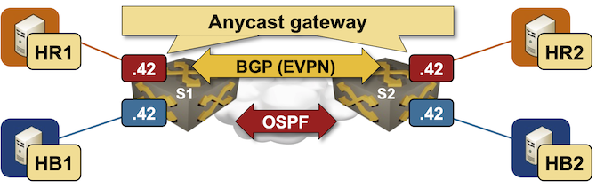

Integrated Routing and Bridging (IRB) with EVPN
In the previous lab exercises, we created MAC-VRFs to extend isolated VLANs with VXLAN segments using the EVPN control plane. Now, we’ll add routing to the mix: the switches using EVPN/VXLAN to extend VLANs will also route between them.
The lab topology is as simple as in the previous exercises: a pair of hosts per VLAN attached to two directly connected switches. The switches use these technologies:
- Anycast gateways to give the same first-hop gateway to all attached hosts
- VXLAN to transport bridged or routed layer-2 frames across an IP backbone
- EVPN control plane to propagate the endpoints’ MAC/IP addresses.

Device Requirements
You can use any device supported by the netlab OSPF, BGP, and VLAN configuration modules. The device should support VXLAN and EVPN.
Start the Lab
Assuming you already set up your lab infrastructure:
- Change directory to
evpn/3-irb - Execute netlab up
- Log into lab devices with netlab connect and verify that the IP addresses and the OSPF are properly configured.
Existing Device Configuration
- The switches in your lab (S1 and S2) are preconfigured with red and blue VLANs:
| VLAN | VLAN tag | IPv4 prefix |
|---|---|---|
| red | 100 | 172.16.10.0/24 |
| blue | 101 | 172.16.11.0/24 |
- IPv4 addresses are configured on Linux hosts, switch loopback interfaces, and the interswitch link (details).
- Static routes pointing to the anycast gateway are configured on the Linux hosts:
| Host | IPv4 prefix | Next hop |
|---|---|---|
| HR1 | 172.16.0.0/16 | 172.16.10.42 |
| HR2 | 172.16.0.0/16 | 172.16.10.42 |
| HB1 | 172.16.0.0/16 | 172.16.11.42 |
| HB2 | 172.16.0.0/16 | 172.16.11.42 |
- The switches run OSPF in area 0 across the interswitch link (details).
- The switches have an IBGP session between their loopback interfaces. The IBGP session is currently configured to exchange IPv4 prefixes (details).
Configure Integrated Routing
You’ll configure the tenant VRF1, IP addresses on switch VLAN interfaces, and anycast gateways before configuring VXLAN or EVPN:
- Create a tenant VRF and enable IP routing in that VRF
- Put the red and blue VLAN interfaces into the tenant VRF
- Configure the following IP addresses on S1 and S2:
| Node/Interface | IPv4 Address | Description |
|---|---|---|
| s1 | ||
| Vlan100 | 172.16.10.1/24 | VLAN red (100) -> [hr1,hr2,s2] (VRF: tenant) |
| Vlan101 | 172.16.11.1/24 | VLAN blue (101) -> [hb1,hb2,s2] (VRF: tenant) |
| s2 | ||
| Vlan100 | 172.16.10.2/24 | VLAN red (100) -> [hr1,s1,hr2] (VRF: tenant) |
| Vlan101 | 172.16.11.2/24 | VLAN blue (101) -> [hb1,s1,hb2] (VRF: tenant) |
- Using the commands you mastered in the Anycast Gateways on VXLAN Segments lab exercise, configure the anycast gateways (or active-active VRRP) on red and blue VLANs using these IP addresses:
| VLAN | Gateway IP address |
|---|---|
| red | 172.16.10.42/24 |
| blue | 172.16.11.42/24 |
- Check that the local inter-VLAN routing works: HR1 should be able to reach HB1, and HR2 should be able to reach HB2
- Verify that cross-switch VLAN connectivity does not work: HR1 cannot reach HR2, HB1 cannot reach HB2, and HR1 cannot reach HB2.
Configure VXLAN and EVPN
Using the procedure you mastered in the Build an EVPN-based MAC-VRF instance lab exercise, configure:
- EVPN address family on the S1-S2 IBGP session
- MAC-VRF for the red and blue VLANs using these parameters:
| VLAN | VNI | route target |
|---|---|---|
| red | 10010 | 65000:100 |
| blue | 10011 | 65000:101 |
Some platforms might require additional nerd knobs to make ARP resolution work. For example, you might have to configure an EVPN IP-VRF (with EVPN route targets but no route redistribution) or advertisements of router MAC addresses as EVPN routes.
Tip
See EVPN Routes and ARP Resolution section for more details (the ARP Challenges in EVPN/VXLAN Symmetric IRB blog post describes a similar challenge).
Verification and Troubleshooting
Use netlab validate or ping on hosts to verify that all hosts can reach each other:
hr1:/# ping -c 3 hb2
PING hb2 (172.16.11.6): 56 data bytes
64 bytes from 172.16.11.6: seq=0 ttl=63 time=5.410 ms
64 bytes from 172.16.11.6: seq=1 ttl=63 time=2.072 ms
64 bytes from 172.16.11.6: seq=2 ttl=63 time=2.098 ms
--- hb2 ping statistics ---
3 packets transmitted, 3 packets received, 0% packet loss
round-trip min/avg/max = 2.072/3.193/5.410 ms
Use the troubleshooting hints from the Build an EVPN-based MAC-VRF instance lab exercise if needed (we expect you’re familiar with the traditional routing between VLAN segments).
If the inter-VLAN forwarding (routing) fails while the intra-VLAN forwarding (bridging) works, you probably have an ARP resolution problem. Inspect the EVPN routes and the VRF ARP tables on S1 and S2 to see whether S1 and S2 have all the necessary ARP entries for the attached hosts.
Sample VRF ARP table on S1 running Arista EOS (some ARP entries are derived from EVPN routes)
s1#show arp vrf tenant
Address Age (sec) Hardware Addr Interface
172.16.10.2 - 001c.73e5.c589 Vlan100, Vxlan1
172.16.10.3 0:02:18 aac1.abee.f5ff Vlan100, Ethernet2
172.16.11.2 - 001c.73e5.c589 Vlan101, Vxlan1
172.16.11.6 - aac1.abc5.8066 Vlan101, Vxlan1
EVPN Routes and ARP Resolution
Each host uses the anycast gateway on the adjacent switch as the first-hop router. Our implementation is thus asymmetric Integrated Routing and Bridging (IRB) – the router in the HB1-HR2 path differs from the router in the HR2-HB1 path.

Tip
You should be able to use the traceroute command to verify the asymmetric path. Unfortunately, some switches break traceroute because they don’t send ICMP replies to packets received on the anycast gateway’s MAC address.
Based on the above diagram, the inter-VLAN packet forwarding works only when:
- The ingress switch (S1) replies to an ARP request from the source host
- The ingress switch can populate the ARP entry in the destination subnet to resolve the MAC address of the destination host
- The same process works in the reverse direction on the egress switch (S2)
A layer-3 switch (S1 or S2) can populate the ARP entries from EVPN routes or by using traditional ARP requests/replies:
- The ARP request is broadcast from the unicast MAC/IP address of the ingress switch into the destination subnet
- The broadcast has to be propagated across the VXLAN segment and reach the destination host
- The ARP response is sent to the unicast MAC address of the ingress switch. The ARP entry on the ingress switch will be created only if the ingress switch receives that response.
With that in mind, let’s inspect the EVPN routes we might see once the lab is working correctly (the presence of the MAC-IP routes depends on the aging of MAC/ARP entries). It’s worth noting that you won’t see any new EVPN route types; the switches originate only MAC-IP (type-2) and IMET (type-3) EVPN routes:
EVPN routes on S1 running Arista EOS
s1#show bgp evpn
BGP routing table information for VRF default
Router identifier 10.0.0.1, local AS number 65000
Route status codes: * - valid, > - active, S - Stale, E - ECMP head, e - ECMP
c - Contributing to ECMP, % - Pending best path selection
Origin codes: i - IGP, e - EGP, ? - incomplete
AS Path Attributes: Or-ID - Originator ID, C-LST - Cluster List, LL Nexthop - Link Local Nexthop
Network Next Hop Metric LocPref Weight Path
* > RD: 10.0.0.2:100 mac-ip aac1.ab4c.bbaf
10.0.0.2 - 100 0 i
* > RD: 10.0.0.2:100 mac-ip aac1.ab4c.bbaf 172.16.10.4
10.0.0.2 - 100 0 i
* > RD: 10.0.0.1:100 mac-ip aac1.ab80.7a20
- - - 0 i
* > RD: 10.0.0.1:100 mac-ip aac1.ab80.7a20 172.16.10.3
- - - 0 i
* > RD: 10.0.0.2:101 mac-ip aac1.abd2.254b
10.0.0.2 - 100 0 i
* > RD: 10.0.0.2:101 mac-ip aac1.abd2.254b 172.16.11.6
10.0.0.2 - 100 0 i
* > RD: 10.0.0.1:100 imet 10.0.0.1
- - - 0 i
* > RD: 10.0.0.1:101 imet 10.0.0.1
- - - 0 i
* > RD: 10.0.0.2:100 imet 10.0.0.2
10.0.0.2 - 100 0 i
* > RD: 10.0.0.2:101 imet 10.0.0.2
10.0.0.2 - 100 0 i
EVPN routes on S1 running FRRouting release 10.5.1
s1# show bgp l2vpn evpn
BGP table version is 5, local router ID is 10.0.0.1
Status codes: s suppressed, d damped, h history, * valid, > best, i - internal
Origin codes: i - IGP, e - EGP, ? - incomplete
EVPN type-1 prefix: [1]:[EthTag]:[ESI]:[IPlen]:[VTEP-IP]:[Frag-id]
EVPN type-2 prefix: [2]:[EthTag]:[MAClen]:[MAC]:[IPlen]:[IP]
EVPN type-3 prefix: [3]:[EthTag]:[IPlen]:[OrigIP]
EVPN type-4 prefix: [4]:[ESI]:[IPlen]:[OrigIP]
EVPN type-5 prefix: [5]:[EthTag]:[IPlen]:[IP]
Network Next Hop Metric LocPrf Weight Path
Route Distinguisher: 10.0.0.1:100
*> [2]:[0]:[48]:[aa:c1:ab:14:59:f8]
10.0.0.1(s1) 32768 i
ET:8 RT:65000:100
*> [2]:[0]:[48]:[aa:c1:ab:14:59:f8]:[32]:[172.16.10.3]
10.0.0.1(s1) 32768 i
ET:8 RT:65000:100
*> [2]:[0]:[48]:[ca:f4:00:01:00:00]:[32]:[172.16.10.1]
10.0.0.1(s1) 32768 i
ET:8 RT:65000:100
*> [3]:[0]:[32]:[10.0.0.1]
10.0.0.1(s1) 32768 i
ET:8 RT:65000:100
Route Distinguisher: 10.0.0.1:101
*> [2]:[0]:[48]:[ca:f4:00:01:00:01]:[32]:[172.16.11.1]
10.0.0.1(s1) 32768 i
ET:8 RT:65000:101
*> [3]:[0]:[32]:[10.0.0.1]
10.0.0.1(s1) 32768 i
ET:8 RT:65000:101
Route Distinguisher: 10.0.0.2:100
*>i [2]:[0]:[48]:[ca:f4:00:02:00:00]:[32]:[172.16.10.2]
10.0.0.2(s2) 100 0 i
RT:65000:100 ET:8
*>i [3]:[0]:[32]:[10.0.0.2]
10.0.0.2(s2) 100 0 i
RT:65000:100 ET:8
Route Distinguisher: 10.0.0.2:101
*>i [2]:[0]:[48]:[aa:c1:ab:d0:5e:45]
10.0.0.2(s2) 100 0 i
RT:65000:101 ET:8
*>i [2]:[0]:[48]:[ca:f4:00:02:00:01]:[32]:[172.16.11.2]
10.0.0.2(s2) 100 0 i
RT:65000:101 ET:8
*>i [3]:[0]:[32]:[10.0.0.2]
10.0.0.2(s2) 100 0 i
RT:65000:101 ET:8
Displayed 11 out of 11 total prefixes
The contents of the EVPN MAC-IP routes depend heavily on the EVPN implementation (proving yet again that EVPN is the SIP of networking):
- As the hosts have to send ARP requests to the switches (they use them as the default gateway), the switches discover the IP addresses (not just the MAC addresses) of the attached hosts. Some switches (for example, Arista EOS) originate MAC-IP routes with MAC and IP addresses; others (for example, FRR) do not (their MAC-IP routes contain only MAC addresses)
- If a switch decides to advertise a host IP address in a MAC-IP route, it could originate a single MAC-IP route with both addresses, or revoke a route with the MAC address and replace it with another route with MAC and IP addresses. Arista EOS originates MAC-IP routes with and without IP addresses, effectively doubling the size of the EVPN BGP table.
- A switch might not advertise the MAC and IP address of its VLAN interfaces as MAC-IP routes. You have to configure redistribute router-mac system ip in the MAC-VRF on Arista EOS or advertise-svi-ip on FRRouting EVPN address family to advertise the MAC and IP addresses of the VLAN interfaces as MAC-IP routes.
Considering these details, it’s easy to see an immediate interoperability challenge:
- FRRouting does not advertise host IP addresses in the MAC-IP EVPN routes.
- Arista EOS cannot use the MAC-IP EVPN routes to populate the ARP cache
- Arista EOS sends ARP requests to populate the ARP entries, but the source MAC address of the ARP request is not advertised as an EVPN route unless you configured redistribute router-mac system ip.
Fortunately, Ethernet is forgiving (and loves to waste resources). Since the ingress switch’s MAC address is unknown, the ARP reply sent to it is flooded across the VXLAN segment and eventually reaches the ingress switch.
Cheating
- Shut down your lab with the netlab down command
- Start the lab from the
solution.ymltopology with the netlab up solution.yml command - Explore the S1/S2 device configuration
Reference Information
Lab Wiring
| Origin Device | Origin Port | Destination Device | Destination Port |
|---|---|---|---|
| s1 | Ethernet1 | s2 | Ethernet1 |
| hr1 | eth1 | s1 | Ethernet2 |
| hr2 | eth1 | s2 | Ethernet2 |
| hb1 | eth1 | s1 | Ethernet3 |
| hb2 | eth1 | s2 | Ethernet3 |
Lab Addressing
| Node/Interface | IPv4 Address | IPv6 Address | Description |
|---|---|---|---|
| s1 | 10.0.0.1/32 | Loopback | |
| Ethernet1 | 10.1.0.1/30 | s1 -> s2 | |
| s2 | 10.0.0.2/32 | Loopback | |
| Ethernet1 | 10.1.0.2/30 | s2 -> s1 | |
| hr1 | |||
| eth1 | 172.16.10.3/24 | hr1 -> [s1,hr2,s2] | |
| hr2 | |||
| eth1 | 172.16.10.4/24 | hr2 -> [hr1,s1,s2] | |
| hb1 | |||
| eth1 | 172.16.11.5/24 | hb1 -> [s1,hb2,s2] | |
| hb2 | |||
| eth1 | 172.16.11.6/24 | hb2 -> [hb1,s1,s2] |
OSPF Routing (Area 0)
| Router | Interface | IPv4 Address | Neighbor(s) |
|---|---|---|---|
| s1 | Loopback | 10.0.0.1/32 | |
| Ethernet1 | 10.1.0.1/30 | s2 | |
| s2 | Loopback | 10.0.0.2/32 | |
| Ethernet1 | 10.1.0.2/30 | s1 |
BGP Routing
| Node | Router ID/ Neighbor |
Router AS/ Neighbor AS |
Neighbor IPv4 |
|---|---|---|---|
| s1 | 10.0.0.1 | 65000 | |
| s2 | 65000 | 10.0.0.2 | |
| s2 | 10.0.0.2 | 65000 | |
| s1 | 65000 | 10.0.0.1 |
-
Some platforms need VRFs to make integrated routing and bridging work with the EVPN control plane ↩